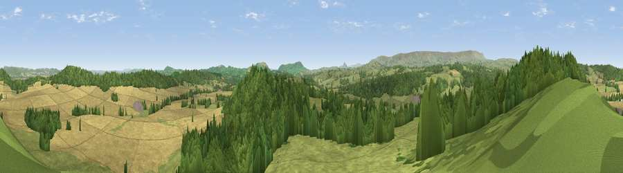

Viewpoint near Bacton
#9908 in England · top 32% of its area beats it · near BactonWhere it is
The exact computed spot (SO 38675 34425). Click the marker for map links.
The view, rendered

A 360° render of this exact spot computed from the terrain model, tree cover and land cover — summer colours, afternoon light, calibrated against photographs of famous viewpoints. Real trees, hedges and buildings will differ in detail.
The panorama
Grey silhouette: terrain skyline in each direction (720 bearings, Earth curvature and refraction included). Dashed green: skyline with trees (+15 m) and buildings (+8 m) as obstacles. Blue strip: how far the ground is visible on each bearing.
Where the view opens
Wedge length = distance to the farthest visible ground on that bearing (vegetation-aware). Rings at 10, 25 and 50 km.
What fills the view
40% grassland · 32% woodland · 27% cropland
Angular shares of the visible panorama (visual magnitude), not map area. Landscape diversity 0.48 (0–1 Shannon).
Key numbers
More beautiful places nearby
The staircase of upgrades: each row has a higher view potential than everything closer. Driving times are estimates from straight-line distance, calibrated against real road routing — check an actual route before setting out.
| Place | Direction | Drive | Score |
|---|---|---|---|
| Dunseal Hill | SE · 1 km | ~2 min | 66.0 |
| Newbarns Hill | NNW · 1 km | ~2 min | 72.8 |
| Viewpoint near Tyberton | NNW · 4 km | ~9 min | 74.5 |
| Viewpoint near Blakemere | NNW · 6 km | ~12 min | 75.5 |
| Viewpoint near Moccas | NNW · 8 km | ~17 min | 75.9 |
| Viewpoint near Kentchurch | SE · 10 km | ~19 min | 79.3 |
| Viewpoint near Orcop Hill | SE · 10 km | ~19 min | 80.7 |
| Garway Hill | SSE · 11 km | ~20 min | 84.6 |
52.00486, -2.89478 · source: screening · position refined by local search. Computed location — check access rights before visiting.